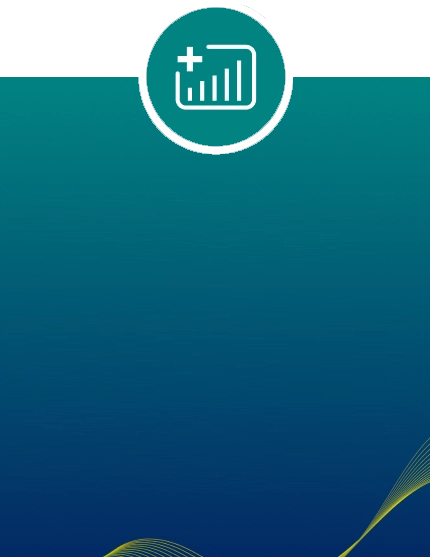
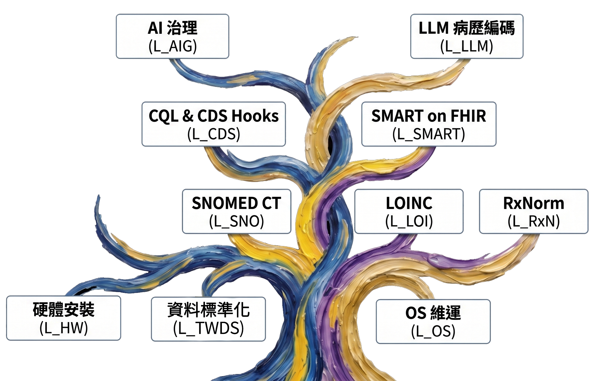

國家數位健康互通性與效能認證實驗室政策概念
臺灣近兩年來資訊處推動 FHIR、SMART on FHIR 與 CQL 等核心技術的整體發展方向。目前，這些技術已經在各個領域逐漸萌芽，也開始形成完整的生態系。
整個發展歷程可以分成幾個階段。
首先，由衛生福利部資訊處提出技術方向與標準規範；接著，由工業技術研究院（工研院）完成技術雛形；再由各醫療院所進行實際落地與驗證，相關經驗在用於優化完成最後系統。如今，我們已經來到最後一棒，也就是產業界的角色，希望透過各位廠商，將這些已經完成驗證的技術商品化、產業化，進一步推廣到市場，形成一個永續發展的智慧醫療產業，也希望孵化下一個臺灣的神山產業。
在這個過程中，衛生福利部資訊處最重要的角色，就是建立標準、驗測與認證制度。唯有建立一致的技術標準，才能讓所有廠商站在共同的基礎上發展產品，彼此相容、共同合作，最終讓臺灣成為國際智慧醫療的典範。
在開始推動這件事情之前，我希望大家先建立一個最大的共識。
如果站在單一公司的角度，每一家廠商都希望建立自己的規格，讓別人的產品無法相容，如此便能形成自己的市場優勢與競爭門檻。此外，遵循國際標準本身並不容易，不但要求繁瑣，也需要投入跨領域的人才與大量資源。因此，許多公司傾向發展自己的軟體、硬體或應用規格，以建立產品的護城河。
然而，我希望大家能夠跳脫這樣的思維。
回顧人類科技產業成功的案例，都建立在共同的平台之上。
PC 產業之所以成功，是因為形成了兩大作業系統──Windows 與 macOS。由於有共同的平台，硬體產業得以蓬勃發展，各式各樣的應用程式也因此快速成長，使電腦成為現代人最重要的工作工具。
進入智慧型手機時代，同樣複製了這套成功模式。Android 與 iOS 作為兩大作業系統，在共同平台上孕育出龐大的應用生態系，同時帶動硬體產業百花齊放，形成今日全球最成功的行動生態系。
同樣的邏輯，也適用於醫療產業。
醫療一定需要一套統一的醫院作業系統 (Healthcare Operating System)，並且建立三條完整的產業賽道。
第一，是醫院作業系統本身。
第二，是支援醫院營運的硬體賽道。醫療資訊系統不是一般個人電腦，而是伺服器等級的基礎設施，因此需要高效能、高可靠度的硬體設備。
第三，是建立在作業系統上的應用生態系。在臺灣，主要就是以 CQL 為核心的臨床決策支援 (Clinical Decision Support) 生態系，以及以 SMART
on FHIR 為核心的應用程式生態系。
這並不是一個未來的想像，而是國際上已經存在的模式。
目前最成熟的案例，就是 Epic。Epic 已經成為美國與歐洲許多頂尖醫學中心的標準配備，它就如同當年的 Apple，以完整且封閉式的解決方案、高效率及完整生態系，占據了大型醫療機構市場。
然而，在 Epic 之外，目前仍缺乏一個真正開放、如同 Android 一般的醫療作業系統。美國其他 HIS 廠商仍在整合階段，歐洲也尚未形成完整的平台，多半仍透過歐盟推動資料交換架構。
因此，這正是臺灣最大的機會。
我們所推動的 FHIR Box，並不是單純的資料轉換器 (Converter) 或 FHIR Server，而是一套真正可以運作的醫療作業系統。
之所以稱它為作業系統，是因為它已經具備完整的作業系統功能，包括：
- 具備資料管理能力，以 Taiwan Health Data Space 為核心。
- 具備完整的應用程式執行層。
- 具備資訊安全管理機制。
- 具備完整的對外連接與網路交換能力。
因此，從底層資料管理、操作介面、應用程式生態，到資訊安全防護，FHIR Box 已經涵蓋了一個作業系統應有的完整架構。
而且，FHIR Box 並不是固定不變的產品，而是一套持續演進的平台。就如同 Windows 從 3.1 發展到今日的版本，每一代都持續增加新的功能。FHIR Box 目前只是 1.0，我們未來也將持續讓這套醫療作業系統不斷成長、持續演化。
過去，許多廠商可能負責 FHIR Server、資料轉換、大數據資料庫、臨床應用等不同領域。未來，這些能力都可以回到 FHIR Box 的共同架構下共同發展。
更重要的是，這並不會衝突各家廠商的商業模式，反而會創造出一個全新的市場。因為衛生福利部與工研院並不會直接服務醫院，而是提供國家級平台與標準；真正服務醫院與診所的，仍然是整體解決方案廠商。
因此，如果過去各位是提供 FHIR Server、資訊整合或 HIS 建置服務，未來則可以轉型為國家醫療作業系統的授權服務商，協助醫院完成部署、導入與維運。
整個生態系可以分成三條明確的產業賽道。
第一，是整體解決方案賽道。
這就如同 Windows 生態中的系統整合商 (System Integrator)，負責協助醫院部署 FHIR Box，建立 TWHealth Data Space、TW Health Rule
Space、TW Health App Space 等完整架構。
第二，是硬體賽道。
FHIR Box 是軟硬整合的新型裝置 (Device)。作業系統由衛生福利部資訊處制定標準，由工研院負責實作與測試，而硬體廠商則可在此基礎上持續提升設備效能，包括
CPU、記憶體、儲存設備、資料存取速度、反應時間，以及韌體最佳化等能力，打造更高效能的醫療伺服器產品。
第三，是應用程式生態系。
過去開發醫療應用程式，需花費大量時間處理資料介接與資訊安全問題。未來，只要遵循 SMART on FHIR 或 CQL 標準，就能直接建立於共同平台之上。
AI 應用可透過 SMART on FHIR 部署；臨床決策支援則可透過 CQL 與 CDS Hooks 建立完整服務。廠商除了自行開發產品外，也可透過取得相關認證，提供醫院完整的導入與維運服務。
因此，整個產業的定位將十分清楚：
做應用程式的，就如同 Windows 上的應用軟體開發商；做硬體的，就是符合標準的醫療設備供應商；做整體解決方案的，則是協助醫院完成整體部署與維運的系統整合商。
這也是我們希望建立的國家智慧醫療生態系。
透過 FHIR Box 作為共同的醫療作業系統，串聯 TW Health Data Space、TW Health Rule Space、TW Health App Space，以及完整的 AI 生態系，讓臺灣建立一套具有國際競爭力、可持續發展的智慧醫療平台。
三大認證賽道

1. 軟體認證
首先是軟體認證。
我們推動的是以 FHIR Box 作為國家授權的醫療作業系統，建立全臺一致的智慧醫療平台。因此，認證的重點並不是 FHIR Box 本身，而是所有需要與 FHIR Box 介接的軟體。換句話說，我們不會認證 FHIR Converter 或 FHIR Server，而是認證所有與 FHIR Box 整合的應用程式。
目前主要包括兩大類：
- CQL (Clinical Quality Language) 臨床決策支援模組
- SMART on FHIR 應用程式
以 CQL 為例，認證內容包含兩個層面。
第一，是技術驗證 (Technical Validation)。
主要確認 CQL 所使用的資料是否符合臺灣核心資料集 (Taiwan Core Data)，是否遵循相關標準與規範，確保其具有互通性與相容性。
第二，是臨床驗證 (Clinical Validation)。
我們將委託長庚大學相關研究團隊，利用實際電子病歷系統、FHIR Box 平台，以及虛擬病歷環境進行測試，確認 CQL 模組在真實臨床情境下能否順利執行，並符合醫療流程需求。只有同時通過技術驗證與臨床驗證，才能取得國家認證標章。
SMART on FHIR 應用程式亦採相同概念。
由於未來所有應用程式都必須上架至國家應用程式市集 (App Marketplace)，因此除了必須符合 SMART on FHIR 規範之外，也需要符合包括：
- Authentication (身分驗證)
- Authorization (授權機制)
- 與臺灣核心資料集的相容性
- 資訊安全規範
除此之外，同樣必須完成臨床驗證。
因為即使完成所有技術測試，也無法保證應用程式在真實醫療資訊系統及虛擬病歷環境中可以順利運作。因此，我們的認證制度將比美國現行制度更進一步，除了技術相容性之外，也將驗證系統在臨床環境中的實際運作效能，確保應用程式真正可以部署於醫院並穩定運行。
因此，軟體認證的原則非常簡單：
凡是需要與 FHIR Box 介接的軟體，都必須經過國家認證。
目前主要涵蓋 CQL 與 SMART on FHIR 兩大類應用。
2. 硬體認證
第二個認證項目是硬體認證。
FHIR Box 是一套軟硬整合的平台，因此硬體設備的效能也必須符合一定標準。
認證方式是將完整的 FHIR Box 作業系統安裝於硬體設備上，再透過國家標準測試流程，進行各項效能驗證。
例如，我們將建立不同規模的標準測試資料集，包括 10 萬筆、25 萬筆及 50 萬筆等不同等級的病例資料，測試硬體在各種情境下的資料轉換效率與處理速度。
此外，也會模擬不同醫療院所的使用情境，例如大量使用者同時存取 FHIR Box，測試整體 Data Flow 的處理能力，包括：
- Request-to-Response Time
- 資料交換速度
- 系統反應時間
- 整體 Performance 表現
所有測試結果都將由國家醫療資訊認證實驗室公開，作為第三方客觀、公正的效能評估。
需要強調的是，效能最高的設備不一定就是最適合所有醫院的設備。
大型醫學中心可能需要追求最高效能，而區域醫院或基層醫療院所則可依照自身需求，選擇最符合成本效益的設備。因此，公開透明的測試結果，將有助於不同層級醫療院所做出最適當的選擇。
3. 全方位解決方案提供者（TSP）認證
第三項，也是最重要的一項，就是整體解決方案廠商認證。
未來真正協助醫院部署 FHIR Box、進行系統安裝、維運、教育訓練，以及建立完整智慧醫療環境的，都是整體解決方案廠商。
因此，國家認證實驗室也將建立整體解決方案廠商的能力認證制度。
認證內容將依據多項指標進行評估，包括：
- 過去執行 FHIR 或智慧醫療專案的經驗
- 公司規模與服務能量
- 技術人員資格與證照
- 已完成的國家認證課程與能力評量
依據不同能力等級，整體解決方案廠商將取得不同層級的服務資格，對應不同層級的醫療機構。
例如：
- 基層診所與衛生所，重點在公共衛生、申報作業及基層醫療服務。
- 區域醫院，則需要更多臨床資訊整合與院內系統管理能力。
- 醫學中心，除了臨床資訊系統外，還必須支援研究、教學、AI 應用、多專科整合等更高階需求。
因此，不同層級的整體解決方案廠商，也將具備不同的服務能力與專業定位。
軟體認證：從技術合規到真實世界落地
應用開發
建立於 FHIR Box 之應用
(CDS, CQL, SMART on FHIR)
技術驗證
檢核項目：
國家資料標準、臺灣核心資料群、跨院互通能力
臨床驗證
委託長庚醫院團隊、三軍總醫院團隊等單位。
檢核：真實 HIS 環境呼叫、AI 運算流程、FHIR 回傳準確度
取得標章
獲頒國家認證標章，準備上架
軟硬整合：免費授權與效能認證
效能革命：為何需要國家級 FHIR Box？
| 比較項目 | 傳統醫院自建 FHIR Server | 國家級 FHIR Box |
|---|---|---|
| 資料交換量 | 小批量、有限範圍 | 全國規模、高通量 |
| 處理時效 | 非同步處理 | 即時性標準化轉換 |
| 硬體架構 | 一般 PC Server（效能不足） | 客製化高效能運算架構（最佳化 CPU/記憶體配置） |
| 核心標準 | 各院自訂格式 | 完全符合臺灣核心資料群 |
TSP 認證制度：量身打造的導入服務
臺灣 FHIR Box 全方位解決方案提供者 (TSP) 分級認證與培訓體系
建構國家級醫療作業系統生態，落實標準化專業人才培訓與三階技術授權體系
FHIR Box 10 大技術授權矩陣 (License Portfolio)
圍繞 FHIR Box 醫療作業系統核心，建立包含硬體安裝、OS 維運、TWDS 資料標準化、SNOMED CT、LOINC、RxNorm、CQL & CDS Hooks、SMART on FHIR 以及 AI 治理與 LLM 病歷編碼等完整技術授權生態樹。點擊下方藍色標籤可直接平滑導覽至該課程介紹。

FHIR Box 四大專業能力領域與 10 大核心認證學程
圍繞衛福部 FHIR Box 國家醫療作業系統生態，規劃基礎設施維運、醫療資料標準化、臨床決策與應用、智慧醫療 AI 治理四大能力領域，提供 10 門核心學程與 100 小時系統化實戰培訓。點擊各學程卡片即可查看完整 10 堂詳細單元課綱。
基礎設施與系統維運工程
FHIR BOX Infrastructure Engineering硬體規格、安裝與擴充
系統架構與硬體認識、邊緣運算規格分析、機房環境與電力保護、BIOS/UEFI 安全性、RAID/NVMe 配置、燒機壓力測試與 RMA 維修流程。
作業系統與維運
最小化核心部署、OS Hardening 資安硬化、系統核心參數調優、網路防火牆規劃、K8s/RKE2 容器叢集、核心服務部署、HA/DR 與自動化升級。
醫療資料標準化工程
Healthcare Data Standardization EngineeringTWDS 資料標準化 (FHIR IG、TWCDI 以及病歷對應等等)
TWDS 發展脈絡、TWCDI 欄位 Mapping、StructureDefinition、Validation 與專案實作。
SNOMED CT 國際臨床術語標準
邏輯模型、後組合與 ECL、台灣 National Release Refset、ICD-10 對映及 Snowstorm 建置。
LOINC 臨床檢驗與評估量表標準
六大軸向剖析、檢驗與生命徵象實務、健保碼 Mapping、5050 資料庫查詢與 FHIR 整合。
RxNorm 國際藥品標準與交互作用
實體模型解析、健保藥品對映、RxNav API 實作、處方成分歸一化與藥品交互作用 (DDI)。
臨床應用與決策支援工程
Clinical Application & CDS EngineeringCQL & CDS Hooks 臨床決策支援
CQL 語法與 FHIR 綁定、CDS Hooks 觸發點與 Cards 設計、FHIR BOX 內建 CDS 引擎部署。
SMART on FHIR 醫療應用整合
OAuth 2.0 / OIDC 醫療資安、SMART App Launch、細粒度授權、EHR 介面整合與 App Store 管理。
智慧醫療 AI 工程
Healthcare AI EngineeringAI 治理 (AI Governance)
三大 AI 中心任務、TFDA/FDA 上市前驗證、MLOps、去識別化、可解釋性 AI、聯邦學習與風險管理。
LLM 病歷編碼
自由文本病歷解析、Prompt Engineering、RAG 術語庫檢索、地端專用微調與端側輕量化部署。
TSP 廠商三階認證與服務對象 (Partner Tiers)
醫學中心級夥伴
評分門檻 ≥ 80 分主要服務對象：醫學中心、國家級研究醫院、大型醫療體系
授權承接範圍：全院核心 FHIR Box 建置、核心 HIS/PACS 整合、智慧醫院與聯邦學習、主權雲與高可用叢集。
區域醫院級夥伴
評分門檻 ≥ 65 分主要服務對象：區域 / 地區醫院、中型專科醫院
授權承接範圍：中小型 HIS/EMR 串接、FHIR Server & TWCore、SMART on FHIR 應用導入、基礎臨床 AI。
基層照護級夥伴
評分門檻 ≥ 50 分主要服務對象：診所、衛生所、長照與健檢中心
授權承接範圍：標準化快速安裝、MyData 醫療資料交換、個人健康管理平台、基本 SMART App 對接。
高強度四階段培訓與認證流程 (Training & Certification Flow)
線上課程 (e-Learning)
8-16 小時自定進度，涵蓋 FHIR Box 系統架構、國際標準 (R4/R5) 與實務避坑指南。
線上測驗 (Online Exam)
嚴格線上監考（得分需 ≥ 80%），包含臨床情境推理與系統案例分析。
實作訓練 (Hands-on Lab)
於工研院 (ITRI) 國家級沙盒進行，每位學員配置獨立虛擬實驗環境實戰演練。
實機認證測試 (Lab)
限時任務導向審查（得分需 ≥ 85%），全面考驗安裝、效能調校、資安與除錯能力。
認證人員每年須完成 16 小時 CE 課程與 1 張新 License/Delta 測驗；若遇 TWCore IG 重大改版須於 180 天內完成對接升級，確保獲得衛福部官方白名單市集 (Marketplace) 推薦並維持市場最高信任。